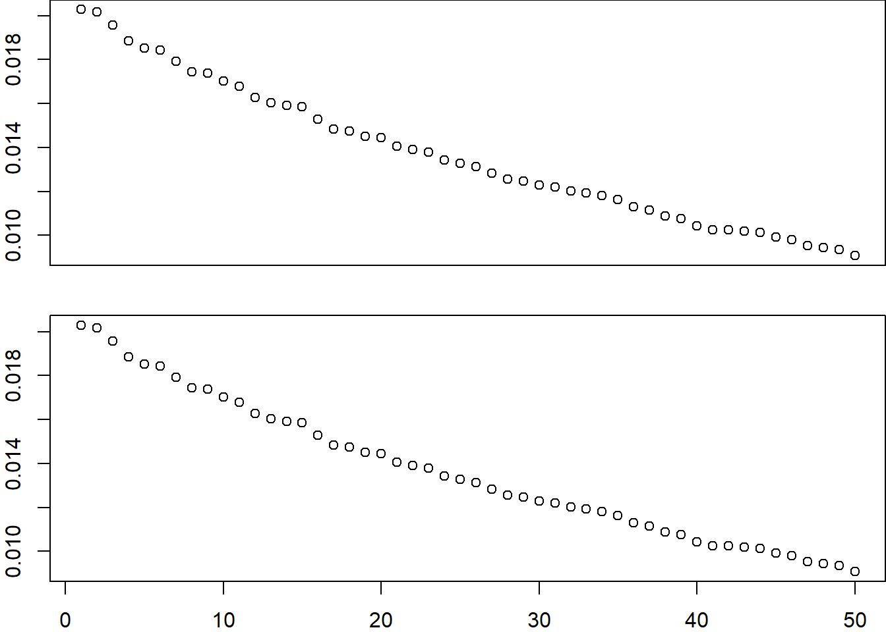

5 Principal Component Analysis
Principal Component Analysis (PCA) is a widely used dimensionality reduction technique in statistics and machine learning. While it is often introduced as a method for finding orthogonal directions of maximum variance, another fundamental perspective is that PCA provides the best low-rank approximation of the data matrix \(\mathbf{X}\).
In many real-world datasets, the observed variables exhibit significant redundancy due to correlations between features. This means that the true intrinsic dimensionality of the data is often much lower than the number of measured variables. PCA exploits this redundancy by representing the data using a lower-dimensional subspace while preserving as much of the original information as possible.
5.1 PCA as a Low-Rank Approximation of \(\mathbf{X}\)
Let \(\mathbf{X}\) be an \(n \times p\) data matrix, where \(n\) is the number of observations and \(p\) is the number of variables. The goal of PCA is to find a low-rank representation of \(\mathbf{X}\) that captures its most important structure. This is achieved through the Singular Value Decomposition (SVD):
\[ \mathbf{X} = \sum_{i=1}^{r} \sigma_i \mathbf{u}_i \mathbf{v}_i' \]
where: - \(\sigma_1 \geq \sigma_2 \geq \dots \geq \sigma_r > 0\) are the singular values of \(\mathbf{X}\), - \(\mathbf{u}_i\) and \(\mathbf{v}_i\) are the corresponding left and right singular vectors, - \(r = \text{rank}(\mathbf{X})\).
PCA provides a rank-\(k\) approximation by retaining only the top \(k\) singular values and singular vectors, leading to:
\[ \mathbf{X}_k = \sum_{i=1}^{k} \sigma_i \mathbf{u}_i \mathbf{v}_i'. \]
By the Eckart–Young–Mirsky theorem, this is the best approximation to \(\mathbf{X}\) under the Frobenius norm, meaning it minimizes the reconstruction error:
\[ \|\mathbf{X} - \mathbf{X}_k\|_F^2 = \sum_{i=k+1}^{r} \sigma_i^2. \]
5.1.1 Why Low-Rank Approximation Matters
- Dimensionality Reduction
- The original data matrix \(\mathbf{X}\) is often high-dimensional and contains redundant information.
- PCA allows us to approximate \(\mathbf{X}\) with a much smaller representation while preserving most of the variance.
- The original data matrix \(\mathbf{X}\) is often high-dimensional and contains redundant information.
- Noise Reduction
- Higher-order singular values \(\sigma_{k+1}, \dots, \sigma_r\) are often associated with noise rather than meaningful structure.
- Truncating these components leads to a denoised version of the data.
- Higher-order singular values \(\sigma_{k+1}, \dots, \sigma_r\) are often associated with noise rather than meaningful structure.
- Compression and Storage Efficiency
- Instead of storing \(n \times p\) raw data values, we only need to store the top \(k\) singular values and vectors, which is much more memory-efficient.
- Feature Extraction
- The principal components (columns of \(\mathbf{V}_k\)) define a new basis for the data that is more informative and often interpretable.
- These features can be used for classification, clustering, and visualization.
- The principal components (columns of \(\mathbf{V}_k\)) define a new basis for the data that is more informative and often interpretable.
5.1.2 The Singular Value Solution is the Best Low-Rank Approximation (Eckart–Young–Mirsky Theorem)
We want to prove that the truncated Singular Value Decomposition (SVD) provides the best rank-\(k\) approximation to a matrix \(\mathbf{X}\) in the Frobenius norm and spectral norm. This result is known as the Eckart–Young–Mirsky theorem.
5.1.2.1 Problem Statement (Eckart–Young–Mirsky Theorem)
Let \(\mathbf{X}\) be an \(n \times p\) matrix with full SVD:
\[ \mathbf{X} = \sum_{i=1}^{r} \sigma_i \mathbf{u}_i \mathbf{v}_i' \]
where: - \(\sigma_1 \geq \sigma_2 \geq \dots \geq \sigma_r > 0\) are the singular values (ordered decreasingly), - \(\mathbf{u}_i\) are the left singular vectors (columns of \(\mathbf{U}\), an \(n \times n\) orthonormal matrix), - \(\mathbf{v}_i\) are the right singular vectors (columns of \(\mathbf{V}\), a \(p \times p\) orthonormal matrix), - \(r = \text{rank}(\mathbf{X})\).
We seek a rank-\(k\) matrix \(\mathbf{Y}\) that best approximates \(\mathbf{X}\) by minimizing the Frobenius norm error:
\[ \min_{\text{rank}(\mathbf{Y}) = k} \|\mathbf{X} - \mathbf{Y}\|_F. \]
The theorem states that the best rank-\(k\) approximation is given by the truncated SVD:
\[ \mathbf{X}_k = \sum_{i=1}^{k} \sigma_i \mathbf{u}_i \mathbf{v}_i'. \]
We now prove this claim.
5.1.2.2 Proof (Eckart–Young–Mirsky Theorem)
We will show this in four steps.
- Step 1: The Frobenius norm of \(\mathbf{X}\) is:
\[ \|\mathbf{X}\|_F^2 = \sum_{i=1}^{r} \sigma_i^2. \]
- Step 2: Any rank-\(k\) approximation \(\mathbf{Y}\) can be written in terms of some linear combination of singular vectors:
\[ \mathbf{Y} = \sum_{i=1}^{k} a_i \mathbf{u}_i \mathbf{v}_i'. \]
- Step 3: The residual error
\[ \|\mathbf{X} - \mathbf{Y}\|_F^2 = \sum_{i=1}^{k} (\sigma_i - a_i)^2 + \sum_{i=k+1}^{r} \sigma_i^2 \]
- Step 4: The optimal choice is \(a_i = \sigma_i\) for the first \(k\) terms and \(a_i = 0\) for the rest.
For Step 1, we want to show that the Frobenius norm of a matrix \(\mathbf{X}\) is equal to the sum of the squared singular values:
\[ \|\mathbf{X}\|_F^2 = \sum_{i=1}^{r} \sigma_i^2. \]
The Frobenius norm of an \(n \times p\) matrix \(\mathbf{X}\) is defined as:
\[ \|\mathbf{X}\|_F = \sqrt{\sum_{i=1}^{n} \sum_{j=1}^{p} x_{ij}^2}. \]
Squaring both sides:
\[ \|\mathbf{X}\|_F^2 = \sum_{i=1}^{n} \sum_{j=1}^{p} x_{ij}^2. \]
An alternative way to express the Frobenius norm is using the trace function:
\[ \|\mathbf{X}\|_F^2 = \text{Tr}(\mathbf{X}' \mathbf{X}). \]
where \(\text{Tr}(\mathbf{A})\) denotes the trace (sum of the diagonal elements) of a square matrix \(\mathbf{A}\).
To see this note that
\[ \|\mathbf{X}\|_F^2 = \sum_{i=1}^{n} \sum_{j=1}^{p} x_{ij}^2 = \sum_{j=1}^{p} \sum_{i=1}^{n} x_{ij}^2 = \sum_{j=1}^{p} {\boldsymbol x} _j' {\boldsymbol x} _j = \text{Tr}(\mathbf{X}' \mathbf{X}). \]
From the SVD decomposition, we write:
\[ \mathbf{X} = \mathbf{U} \mathbf{\Sigma} \mathbf{V}' \]
where: - \(\mathbf{U}\) is an \(n \times n\) orthonormal matrix of left singular vectors, - \(\mathbf{V}\) is a \(p \times p\) orthonormal matrix of right singular vectors, - \(\mathbf{\Sigma}\) is an \(n \times p\) diagonal matrix of singular values:
\[ \mathbf{\Sigma} = \begin{bmatrix} \sigma_1 & 0 & 0 & \cdots & 0 \\ 0 & \sigma_2 & 0 & \cdots & 0 \\ 0 & 0 & \sigma_3 & \cdots & 0 \\ \vdots & \vdots & \vdots & \ddots & \vdots \\ 0 & 0 & 0 & \cdots & \sigma_r \\ \vdots & \vdots & \vdots & \vdots & \vdots \end{bmatrix}. \]
The rank of \(\mathbf{X}\) is \(r\), meaning it has \(r\) nonzero singular values.
Now, compute \(\mathbf{X}' \mathbf{X}\):
\[ \mathbf{X}' \mathbf{X} = (\mathbf{U} \mathbf{\Sigma} \mathbf{V}')' (\mathbf{U} \mathbf{\Sigma} \mathbf{V}'). \]
Using the transpose property \((\mathbf{A} \mathbf{B})' = \mathbf{B}' \mathbf{A}'\):
\[ \mathbf{X}' \mathbf{X} = \mathbf{V} \mathbf{\Sigma}' \mathbf{U}' \mathbf{U} \mathbf{\Sigma} \mathbf{V}'. \]
Since \(\mathbf{U}\) is orthonormal (\(\mathbf{U}' \mathbf{U} = \mathbf{I}\)), this simplifies to:
\[ \mathbf{X}' \mathbf{X} = \mathbf{V} \mathbf{\Sigma}' \mathbf{\Sigma} \mathbf{V}'. \]
Since \(\mathbf{\Sigma}' \mathbf{\Sigma}\) is a diagonal matrix with squared singular values \(\sigma_i^2\), we get:
\[ \mathbf{X}' \mathbf{X} = \mathbf{V} \begin{bmatrix} \sigma_1^2 & 0 & \cdots & 0 \\ 0 & \sigma_2^2 & \cdots & 0 \\ 0 & 0 & \ddots & 0 \\ 0 & 0 & 0 & \sigma_r^2 \end{bmatrix} \mathbf{V}'. \]
Taking the trace on both sides:
\[ \text{Tr}(\mathbf{X}' \mathbf{X}) = \text{Tr}(\mathbf{V} \mathbf{\Sigma}' \mathbf{\Sigma} \mathbf{V}'). \]
Since the trace is invariant under cyclic permutations:
\[ \text{Tr}(\mathbf{X}' \mathbf{X}) = \text{Tr}( \mathbf{V}' \mathbf{V} \mathbf{\Sigma}' \mathbf{\Sigma}) = \text{Tr}(\mathbf{\Sigma}' \mathbf{\Sigma}). \]
Since \(\mathbf{\Sigma}' \mathbf{\Sigma}\) is diagonal, its trace is simply the sum of the diagonal elements:
\[ \text{Tr}(\mathbf{\Sigma}' \mathbf{\Sigma}) = \sum_{i=1}^{r} \sigma_i^2. \]
Since we previously established that:
\[ \|\mathbf{X}\|_F^2 = \text{Tr}(\mathbf{X}' \mathbf{X}), \]
we conclude:
\[ \|\mathbf{X}\|_F^2 = \sum_{i=1}^{r} \sigma_i^2. \]
For Step 2, we claim that any rank-\(k\) matrix \(\mathbf{Y}\) can be expressed as:
\[ \mathbf{Y} = \sum_{i=1}^{k} a_i \mathbf{u}_i \mathbf{v}_i'. \]
This follows from the fact that the outer products of the singular vectors,
\[ \mathbf{u}_i \mathbf{v}_i' \]
form an orthonormal basis for matrices in \(\mathbb{R}^{n \times p}\), meaning that any rank-\(k\) matrix can be expressed as a linear combination of at most \(k\) of these elements.
To see this, consider the inner product between two singular vector outer products, defined as:
\[ \langle \mathbf{u}_i \mathbf{v}_i', \mathbf{u}_j \mathbf{v}_j' \rangle_F. \]
By the Frobenius inner product, the inner product between two matrices \(\mathbf{A}\) and \(\mathbf{B}\) is:
\[ \langle \mathbf{A}, \mathbf{B} \rangle_F = \text{Tr}(\mathbf{A}' \mathbf{B}). \]
Applying this to the singular vectors:
\[ \langle \mathbf{u}_i \mathbf{v}_i', \mathbf{u}_j \mathbf{v}_j' \rangle_F = \text{Tr} \big( (\mathbf{u}_i \mathbf{v}_i')' (\mathbf{u}_j \mathbf{v}_j') \big). \]
Using the transpose property \((\mathbf{A} \mathbf{B})' = \mathbf{B}' \mathbf{A}'\), we get:
\[ \langle \mathbf{u}_i \mathbf{v}_i', \mathbf{u}_j \mathbf{v}_j' \rangle_F = \text{Tr} \big( \mathbf{v}_i \mathbf{u}_i' \mathbf{u}_j \mathbf{v}_j' \big). \]
Since \(\mathbf{U}\) and \(\mathbf{V}\) are orthonormal, we use:
\[ \mathbf{u}_i' \mathbf{u}_j = \delta_{ij}, \quad \mathbf{v}_i' \mathbf{v}_j = \delta_{ij}. \]
where \(\delta_{ij} = 1\), if \(i=j\) and \(\delta_{ij} = 0\), if \(i \neq j\).
Thus,
\[ \langle \mathbf{u}_i \mathbf{v}_i', \mathbf{u}_j \mathbf{v}_j' \rangle_F = \delta_{ij}. \]
This proves that \(\{ \mathbf{u}_i \mathbf{v}_i' \}_{i=1}^{k}\) are orthonormal under the Frobenius inner product, therefore linearly independent and forming an spanning bases for a rank \(k\) matrix.
For Step 3, mote that the error matrix is:
\[ \mathbf{X} - \mathbf{Y} = \sum_{i=1}^{r} \sigma_i \mathbf{u}_i \mathbf{v}_i' - \sum_{i=1}^{k} a_i \mathbf{u}_i \mathbf{v}_i'. \]
Rewriting this sum:
\[ \mathbf{X} - \mathbf{Y} = \sum_{i=1}^{k} (\sigma_i - a_i) \mathbf{u}_i \mathbf{v}_i' + \sum_{i=k+1}^{r} \sigma_i \mathbf{u}_i \mathbf{v}_i'. \]
Since the singular vector outer products \(\mathbf{u}_i \mathbf{v}_i'\) form an orthonormal basis under the Frobenius norm, the squared Frobenius norm of a sum of such terms is the sum of the squared coefficients:
\[ \|\mathbf{X} - \mathbf{Y}\|_F^2 = \sum_{i=1}^{k} (\sigma_i - a_i)^2 + \sum_{i=k+1}^{r} \sigma_i^2. \]
Finally, in Step 4, we need to minimize the approximation error:
\[ \sum_{i=1}^{k} (\sigma_i - a_i)^2 + \sum_{i=k+1}^{r} \sigma_i^2, \]
the best choice is clearly:
\[ a_i = \sigma_i, \quad \text{for } i = 1, \dots, k. \]
Thus, the best rank-\(k\) approximation is:
\[ \mathbf{X}_k = \sum_{i=1}^{k} \sigma_i \mathbf{u}_i \mathbf{v}_i'. \]
This minimizes the error:
\[ \|\mathbf{X} - \mathbf{X}_k\|_F^2 = \sum_{i=k+1}^{r} \sigma_i^2. \]
which confirms the Eckart–Young–Mirsky theorem.
5.1.2.3 Uniqueness of the Solution
The Eckart–Young–Mirsky theorem guarantees that the best rank-\(k\) approximation of a matrix \(\mathbf{X}\) in terms of the Frobenius norm is given by the truncated SVD. However, the uniqueness of this solution depends on the singular values.
5.1.2.3.1 Key Condition for Uniqueness
- The best rank-\(k\) approximation is unique if and only if the \(k\)-th singular value \(\sigma_k\) is strictly greater than the \((k+1)\)-th singular value \(\sigma_{k+1}\).
- In other words: \[ \sigma_k > \sigma_{k+1} \implies \text{Unique solution.} \]
5.1.2.3.2 When is the Solution Not Unique?
- If there is a tie or degeneracy in the singular values: \[ \sigma_k = \sigma_{k+1}, \] then the best rank-\(k\) approximation is not unique.
- Multiple linear combinations of the corresponding singular vectors can yield the same Frobenius norm error, leading to multiple optimal solutions.
5.1.2.3.3 Intuition
- Unique solution: Singular values decrease strictly, and each singular vector contributes distinctly to the approximation.
- Non-unique solution: Equal singular values create a subspace of possible solutions, as any linear combination of singular vectors associated with the repeated singular value results in the same approximation quality.
5.1.2.3.4 Example
If \(\mathbf{X}\) has singular values \(\sigma_1 = 5, \sigma_2 = 4, \sigma_3 = 4, \sigma_4 = 2\), then: - The best rank-1 approximation is unique because \(\sigma_1 > \sigma_2\). - The best rank-2 approximation is not unique because \(\sigma_2 = \sigma_3\). - The best rank-3 approximation is unique because \(\sigma_3 > \sigma_4\).
5.1.3 Eckart–Young–Mirsky Theorem for the Spectral Norm
The Eckart–Young–Mirsky theorem is a fundamental result in matrix approximation, stating that the best rank-k approximation of a matrix in terms of the spectral norm is obtained through its singular value decomposition (SVD). However, unlike in the Frobenius norm case, the solution is not always unique in the spectral norm.
5.1.3.1 Spectral Norm Theorem Statement
For any matrix \(\mathbf{X} \in \mathbb{R}^{n \times p}\) with singular values \(\sigma_1 \geq \sigma_2 \geq \cdots \geq \sigma_r > 0\), the rank-k matrix \(\mathbf{X}_k\) that minimizes the spectral norm error \(\|\mathbf{X} - \mathbf{Y}\|_2\) is given by:
\[ \mathbf{X}_k = \sum_{i=1}^k \sigma_i \mathbf{u}_i \mathbf{v}_i', \]
where \(\mathbf{u}_i\) and \(\mathbf{v}_i\) are the left and right singular vectors corresponding to \(\sigma_i\).
The minimal spectral norm error is:
\[ \|\mathbf{X} - \mathbf{X}_k\|_2 = \sigma_{k+1}. \]
5.1.3.2 Spectral Norm Proof Sketch
The spectral norm of a matrix is its largest singular value. Given any rank-k matrix \(\mathbf{Y}\) written as before \(\mathbf{Y} = \sum_{i=1}^{k} a_i \mathbf{u}_i \mathbf{v}_i'\), its singular values are \(a_1, a_2, \dots, a_k\). The error matrix \(\mathbf{X} - \mathbf{Y}\) has singular values:
\[ \{ |\sigma_1 - a_1|, |\sigma_2 - a_2|, \dots, |\sigma_k - a_k|, \sigma_{k+1}, \dots, \sigma_r \}. \]
To minimize the spectral norm of the error, one must ensure that:
\[ \max \{ |\sigma_1 - a_1|, |\sigma_2 - a_2|, \dots, \sigma_{k+1} \} \]
is as small as possible. A way to achieve the minimal error \(\sigma_{k+1}\) is to set \(a_i = \sigma_i\) for \(i=1, \dots, k\), as with the spectral norm, but we can construct different rank-k matrices that also achieve this value.
5.1.3.3 Non-Uniqueness for the Spectral Norm
Unlike in the Frobenius norm case, where the truncated SVD solution is unique, the spectral norm allows for multiple solutions. If we require:
\[ |\sigma_i - a_i| \leq \sigma_{k+1}, \quad \forall i=1, \dots, k, \]
any such choice of \(a_i\) will yield the same spectral norm error \(\sigma_{k+1}\). This provides a class of rank-k approximations that achieve the minimal spectral norm error.
5.1.3.3.1 How to Find Alternative Solutions
To find alternative rank-k approximations with the same spectral norm error, one can:
- Perturb Singular Values: Adjust \(a_i\) such that \(|\sigma_i - a_i| \leq \sigma_{k+1}\), ensuring no singular value difference exceeds \(\sigma_{k+1}\).
- Linear Combinations of Singular Vectors: Combine singular vectors corresponding to equal singular values to create different approximations.
5.1.3.4 Conclusion for the Spectral Norm
The Eckart–Young–Mirsky theorem guarantees the minimal spectral norm error with the truncated SVD solution. However, in cases of spectral norm approximation, the solution is not unique. By carefully choosing singular values and vectors within the specified bounds, one can construct alternative solutions that achieve the same minimal error.
This flexibility in spectral norm approximation highlights the subtle difference between approximations in spectral and Frobenius norms, making it an important consideration in applications like low-rank matrix approximation, data compression, and principal component analysis.
5.2 Variance Maximization in PCA
Principal Component Analysis (PCA) is traditionally introduced as a method that finds directions (principal components) along which the variance of the data is maximized.
Given a data matrix \(\mathbf{X} \in \mathbb{R}^{n \times p}\) with centered columns, PCA seeks an orthonormal set of vectors \(\{\mathbf{v}_1, \mathbf{v}_2, \dots, \mathbf{v}_p\}\) such that:
- The first principal component \(\mathbf{v}_1\) maximizes the variance: \[ \mathbf{v}_1 = \arg \max_{\|\mathbf{v}\|=1} \text{Var}(\mathbf{X}\mathbf{v}) = \arg \max_{\|\mathbf{v}\|=1} \|\mathbf{X}\mathbf{v}\|_2^2. \]
- Subsequent principal components are chosen orthogonal to the previous ones and also maximize the variance.
Each principal component corresponds to a singular vector from the Singular Value Decomposition (SVD) of \(\mathbf{X}\): \[ \mathbf{X} = \mathbf{U} \mathbf{\Sigma} \mathbf{V}', \] where \(\mathbf{\Sigma}\) contains the singular values \(\sigma_1 \ge \sigma_2 \ge \dots \ge \sigma_r > 0\).
The first \(k\) principal components are the first \(k\) columns of \(\mathbf{V}\): \[ \mathbf{v}_1, \mathbf{v}_2, \dots, \mathbf{v}_k, \] with the corresponding principal component scores given by: \[ \mathbf{X} \mathbf{v}_i = \sigma_i \mathbf{u}_i, \quad i = 1, 2, \dots, k. \]
5.2.1 First Principal Cmponent
We aim to find the direction \(\mathbf{v}_1 \in \mathbb{R}^p\) (a unit vector, \(\| \mathbf{v}_1 \| = 1\)) that maximizes the variance of the data when projected onto \(\mathbf{v}_1\).
The dataset is represented by \(\mathbf{X} \in \mathbb{R}^{n \times p}\) (with centered columns), and the projection of \(\mathbf{X}\) onto \(\mathbf{v}_1\) is given by \(\mathbf{Xv}_1\).
5.2.1.1 Variance of the Projection
The variance of the projected data \(\mathbf{Xv}_1\) is:
\[ \text{Var}(\mathbf{Xv}_1) = \frac{1}{n} \| \mathbf{Xv}_1 \|_2^2 = \frac{1}{n} (\mathbf{Xv}_1)'(\mathbf{Xv}_1). \]
Expanding this:
\[ \text{Var}(\mathbf{Xv}_1) = \frac{1}{n} \mathbf{v}_1' \mathbf{X}' \mathbf{X} \mathbf{v}_1. \]
Since \(\frac{1}{n} \mathbf{X}' \mathbf{X}\) is the sample covariance matrix \(\mathbf{S}\), we rewrite the objective as:
\[ \text{maximize } \mathbf{v}_1' \mathbf{S} \mathbf{v}_1 \quad \text{subject to} \quad \| \mathbf{v}_1 \| = 1. \]
5.2.1.2 Optimization Problem (Rayleigh Quotient)
This is a constrained optimization problem that can be solved using the method of Lagrange multipliers:
\[ \mathcal{L}(\mathbf{v}_1, \lambda) = \mathbf{v}_1' \mathbf{S} \mathbf{v}_1 - \lambda (\mathbf{v}_1' \mathbf{v}_1 - 1). \]
Taking the derivative with respect to \(\mathbf{v}_1\) and setting it to zero gives:
\[ \frac{\partial \mathcal{L}}{\partial \mathbf{v}_1} = 2 \mathbf{S} \mathbf{v}_1 - 2 \lambda \mathbf{v}_1 = 0. \]
Thus:
\[ \mathbf{S} \mathbf{v}_1 = \lambda \mathbf{v}_1. \]
5.2.1.3 Eigenvalue Problem
This is an eigenvalue problem where \(\lambda\) is an eigenvalue of \(\mathbf{S}\) and \(\mathbf{v}_1\) is the corresponding eigenvector. The direction \(\mathbf{v}_1\) that maximizes the variance is the eigenvector corresponding to the largest eigenvalue \(\lambda_1\).
Hence, the first principal component \(\mathbf{v}_1\) is the eigenvector of \(\mathbf{S}\) associated with the largest eigenvalue \(\lambda_1\), and the maximum variance is \(\lambda_1\).
5.2.1.4 Connection to SVD
Recall that the SVD of \(\mathbf{X}\) is:
\[ \mathbf{X} = \mathbf{U} \mathbf{\Sigma} \mathbf{V}'. \]
The sample covariance matrix \(\mathbf{S} = \frac{1}{n} \mathbf{X}' \mathbf{X}\) can be written as:
\[ \mathbf{S} = \frac{1}{n} \mathbf{V} \mathbf{\Sigma}' \mathbf{U}' \mathbf{U} \mathbf{\Sigma} \mathbf{V}' = \frac{1}{n} \mathbf{V} \mathbf{\Sigma}^2 \mathbf{V}'. \]
The eigenvectors of \(\mathbf{S}\) are the columns of \(\mathbf{V}\), and the eigenvalues are the squared singular values \(\sigma_i^2\) divided by \(n\).
Thus: - The first principal component direction \(\mathbf{v}_1\) is the first column of \(\mathbf{V}\) from the SVD. - The variance explained by the first principal component is \(\frac{\sigma_1^2}{n}\).
5.2.2 Second Principal Component
The second principal component \(\mathbf{v}_2\) is the direction that: - Maximizes the variance of the projected data \(\mathbf{Xv}_2\), - Subject to being orthogonal to the first principal component \(\mathbf{v}_1\).
5.2.2.1 Optimization Problem
We want to maximize: \[ \text{Var}(\mathbf{Xv}_2) = \mathbf{v}_2' \mathbf{S} \mathbf{v}_2 \] subject to: \[ \|\mathbf{v}_2\| = 1 \quad \text{and} \quad \mathbf{v}_2' \mathbf{v}_1 = 0. \]
5.2.2.2 Solution Using Lagrange Multipliers
The constraint \(\mathbf{v}_2' \mathbf{v}_1 = 0\) ensures orthogonality to the first principal component.
Solving this optimization problem leads to: \[ \mathbf{S} \mathbf{v}_2 = \lambda_2 \mathbf{v}_2 \] where \(\mathbf{v}_2\) is the eigenvector associated with the second largest eigenvalue \(\lambda_2\) of \(\mathbf{S}\).
5.2.2.3 Intuition
Since the first principal component \(\mathbf{v}_1\) has already captured the maximum variance, the second principal component \(\mathbf{v}_2\) captures the next largest amount of variance while being orthogonal to \(\mathbf{v}_1\). We can continue in this way to find the next Principal Components.
5.3 PARAFAC decomposition
The PARAFAC decomposition (also known as CANDECOMP/PARAFAC or CP decomposition) is a natural extension of the concept of Principal Component Analysis (PCA) from matrices to higher-order tensors.
5.3.1 What is a Tensor?
A tensor is a multi-dimensional array, extending the concept of vectors (1D arrays) and matrices (2D arrays) to higher dimensions: - A vector is a tensor of order 1. - A matrix is a tensor of order 2. - A tensor of order \(N\) has \(N\) dimensions (also called modes).
For example: - An image is a matrix (2D tensor). - A color video can be represented as a 3D tensor (height × width × time).
5.3.2 Motivation: Why Generalize PCA to Tensors?
PCA works well with matrices, but many real-world data are naturally represented as tensors: - Psychology: Data from multiple individuals across multiple tests and times. - Signal Processing: Multi-channel EEG data recorded over time. - Chemometrics: Spectral data collected over different conditions.
PCA provides a low-rank approximation for matrices by decomposing them into principal components. The PARAFAC decomposition extends this idea to tensors, finding components along each dimension simultaneously.
5.3.3 PARAFAC Decomposition Definition
Given a tensor \(\mathcal{X} \in \mathbb{R}^{I_1 \times I_2 \times \cdots \times I_N}\), the PARAFAC decomposition expresses \(\mathcal{X}\) as a sum of \(R\) rank-1 tensors:
\[ \mathcal{X} \approx \sum_{r=1}^{R} \mathbf{a}_r^{(1)} \circ \mathbf{a}_r^{(2)} \circ \cdots \circ \mathbf{a}_r^{(N)}, \]
where: - \(R\) is the rank of the decomposition. - \(\mathbf{a}_r^{(n)} \in \mathbb{R}^{I_n}\) are vectors along the \(n\)-th mode. - \(\circ\) denotes the outer product. - Each rank-1 tensor \(\mathbf{a}_r^{(1)} \circ \mathbf{a}_r^{(2)} \circ \cdots \circ \mathbf{a}_r^{(N)}\) is analogous to a principal component in PCA.
5.3.5 Key Properties of PARAFAC Decomposition
- Uniqueness: Unlike PCA (where different rotations of principal components can yield the same solution), the PARAFAC decomposition is unique under mild conditions. This uniqueness makes PARAFAC particularly useful for interpretability.
- Low-rank Approximation: PARAFAC provides a low-rank approximation of tensors, analogous to PCA for matrices.
- Interpretability: Each component can be interpreted as a factor along each mode, making it valuable in fields like chemometrics and neuroscience.
5.4 High-Dimensional PCA
When the number of features or variables is \(p\), computing the eigenvalue decomposition or SVD can be prohebitely expensive. We can have some alternatives depending on the
5.4.1 High-Dimensional PCA (\(p \gg n\))
When the number of features \(p\) is much larger than the number of samples \(n\) (a common scenario in high-dimensional data analysis), directly computing the PCA decomposition from the \(p \times p\) covariance matrix \(\mathbf{X}' \mathbf{X}\) is computationally expensive.
To address this, we can use the matrix \(\mathbf{X} \mathbf{X}'\) instead, which is an \(n \times n\) matrix, making the computation much more efficient.
5.4.1.1 Key Idea
Instead of directly solving the eigenvalue problem: \[ \mathbf{X}' \mathbf{X} \mathbf{v}_i = \lambda_i \mathbf{v}_i, \] we solve the equivalent problem: \[ \mathbf{X} \mathbf{X}' \mathbf{u}_i = \lambda_i \mathbf{u}_i, \] where \(\mathbf{u}_i\) are the left singular vectors of \(\mathbf{X}\).
5.4.1.2 Steps for Efficient Computation
- Form the \(n \times n\) matrix \(\mathbf{X} \mathbf{X}'\) instead of \(\mathbf{X}' \mathbf{X}\).
- Compute the eigenvalues and eigenvectors of \(\mathbf{X} \mathbf{X}'\):
- \(\mathbf{X} \mathbf{X}' \mathbf{u}_i = \sigma_i^2 \mathbf{u}_i.\)
- Obtain singular values \(\sigma_i\) as the square roots of the eigenvalues.
- Compute the principal directions \(\mathbf{v}_i\) from the \(\mathbf{u}_i\) vectors: \[ \mathbf{v}_i = \frac{\mathbf{X}' \mathbf{u}_i}{\sigma_i}. \]
- Compute the PCA scores directly as: \[ \mathbf{X} \mathbf{v}_i = \sigma_i \mathbf{u}_i. \]
5.4.1.3 Why Does This Work?
- The matrix \(\mathbf{X} \mathbf{X}'\) is much smaller when \(n \ll p\), making eigen-decomposition computationally cheaper.
- Once we have the left singular vectors \(\mathbf{u}_i\) from \(\mathbf{X} \mathbf{X}'\), we can easily find the right singular vectors \(\mathbf{v}_i\) without ever forming the large \(p \times p\) matrix.
This approach is crucial for handling high-dimensional data efficiently, ensuring that PCA remains computationally feasible even when \(p \gg n\).
Here’s an explanation with added comments to your provided R Markdown code, keeping the code unchanged:
5.4.1.4 Efficient Computation PCA \(p \gg n\)
5.4.1.4.1 PCA Methods
# PCA using X'X (traditional method)
pca_traditional <- function(X) {
n <- nrow(X)
S <- crossprod(X) # X'X
eig <- eigen(S, symmetric = TRUE) # Eigen decomposition
priCom <- eig$vectors # PC
varExp <- eig$values / sum(eig$values) # Explain Variance by PC
pcaSco <- X %*% eig$vectors # PCA scores
return(list(priCom = priCom,
pcaSco = pcaSco,
varExp = varExp))
}
# PCA using X X' (efficient method)
pca_efficient <- function(X) {
S <- tcrossprod(X) # X X'
eig <- eigen(S, symmetric = TRUE) # Eigen decomposition
singular_values <- sqrt(eig$values)
priCom <- t(t(t(X) %*% eig$vectors) / singular_values) # Compute V = X'U / Sigma
pcaSco <- t(t(eig$vectors) * singular_values) # PCA scores
varExp <- eig$values / sum(eig$values) # Explain Variance by PC
return(list(priCom = priCom,
pcaSco = pcaSco,
varExp = varExp))
}Explanation:
- The traditional method computes PCA from \(X'X\), which is large when \(p \gg n\).
- The efficient method computes PCA from \(X X'\), a smaller matrix when \(p \gg n\), then derives the principal components and scores from that decomposition.
5.4.1.4.2 Simulate a Data Set
# Simulate high-dimensional data
set.seed(123)
n <- 100 # Number of samples
p <- 1000 # Number of features
# Design Matrix
X <- matrix(data = NA,
nrow = n,
ncol = 0)
# Block-Correlation Matrix in Blocks
sizBlo <- 10
disCor <- 0.5
C <- exp(- disCor * abs(rep(1, sizBlo) %*% t(1:sizBlo) - (1:sizBlo) %*% t(rep(1, sizBlo))))
# Simulates the Design Matrix
for(i in 1:(p / sizBlo)){
X <- cbind(X, mvtnorm::rmvnorm(n = n, sigma = C))
}Explanation:
- Simulates a dataset with \(n = 100\) samples and \(p = 1000\) features.
- Correlation is introduced within blocks of features using an exponential decay structure with \(\rho = 0.5\).
5.4.1.4.3 Compare Results
# Performs PCA by Both Methods
outTra <- pca_traditional(X = X)
outEff <- pca_efficient(X = X)
# Compare First Two Principal Components
cbind(outTra$priCom[1:10, 1:2], outEff$priCom[1:10, 1:2])## [,1] [,2] [,3] [,4]
## [1,] -0.001202379 0.004997560 0.001202379 0.004997560
## [2,] 0.014206244 0.032971374 -0.014206244 0.032971374
## [3,] 0.017112378 0.030209540 -0.017112378 0.030209540
## [4,] 0.008336267 0.029518877 -0.008336267 0.029518877
## [5,] 0.007510180 0.041815584 -0.007510180 0.041815584
## [6,] -0.013239150 -0.009654624 0.013239150 -0.009654624
## [7,] 0.008449956 0.042200920 -0.008449956 0.042200920
## [8,] 0.028501647 0.026011567 -0.028501647 0.026011567
## [9,] 0.008413915 0.004696628 -0.008413915 0.004696628
## [10,] 0.018911051 -0.012567287 -0.018911051 -0.012567287# Compares the First Two Principal Component Scores
cbind(outTra$pcaSco[1:10, 1:2], outEff$pcaSco[1:10, 1:2])## [,1] [,2] [,3] [,4]
## [1,] -6.5413193 -4.0702069 6.5413193 -4.0702069
## [2,] -8.5679536 0.3470996 8.5679536 0.3470996
## [3,] -2.7203524 2.0908395 2.7203524 2.0908395
## [4,] 2.7429942 3.8261368 -2.7429942 3.8261368
## [5,] -0.1077707 -6.3139474 0.1077707 -6.3139474
## [6,] 0.2253885 0.2471944 -0.2253885 0.2471944
## [7,] -1.3734419 -4.6083631 1.3734419 -4.6083631
## [8,] 3.2775010 -8.2332778 -3.2775010 -8.2332778
## [9,] -3.3366402 1.1154150 3.3366402 1.1154150
## [10,] 8.1907932 -0.2565279 -8.1907932 -0.2565279# Plots the Variance Explained
par(mar = c(2,2,0,0))
par(mfrow = c(2, 1))
plot(outTra$varExp[1:50], xaxt = "n")
par(mar = c(2,2,0,0))
plot(outTra$varExp[1:50])
Explanation:
- Compares the results from both PCA methods to ensure they are identical.
- Displays the first two principal components and scores side by side.
- Plots the variance explained by the top 50 components for both methods.
5.4.1.4.4 Computational Efficiency Comparison
# Load necessary library
library(microbenchmark)
# Benchmark both methods
benchmark_results <- microbenchmark(
Traditional = pca_traditional(X),
Efficient = pca_efficient(X),
times = 5
)
# Print the results
print(benchmark_results)## Unit: milliseconds
## expr min lq mean median uq max neval
## Traditional 475.6833 480.4067 482.95812 485.1269 485.9995 487.5742 5
## Efficient 4.7050 4.7711 6.06798 5.0668 5.3364 10.4606 5Explanation:
- Uses
microbenchmarkto measure and compare the runtime of both PCA methods. - Demonstrates the computational advantage of the efficient method when \(p \gg n\).
5.4.1.4.5 Larger Example
# Simulate high-dimensional data
set.seed(123)
n <- 100 # Number of samples
p <- 2000 # Number of features
# Design Matrix
X <- matrix(data = NA,
nrow = n,
ncol = 0)
# Block-Correlation Matrix in Blocks
sizBlo <- 10
disCor <- 0.5
C <- exp(- disCor * abs(rep(1, sizBlo) %*% t(1:sizBlo) - (1:sizBlo) %*% t(rep(1, sizBlo))))
# Simulates the Design Matrix
for(i in 1:(p / sizBlo)){
X <- cbind(X, mvtnorm::rmvnorm(n = n, sigma = C))
}
# Benchmark both methods
benchmark_results <- microbenchmark(
Traditional = pca_traditional(X),
Efficient = pca_efficient(X),
times = 5
)
# Print the results
print(benchmark_results)## Unit: milliseconds
## expr min lq mean median uq max neval
## Traditional 3892.6445 3925.5093 4008.5234 3992.7742 4035.0165 4196.6727 5
## Efficient 9.0702 9.1546 9.5051 9.3315 9.9286 10.0406 5Explanation:
- Repeats the PCA and timing comparison on a larger dataset with \(p = 2000\) features to demonstrate the increasing efficiency of the \(X X'\)-based method as \(p\) grows.
5.4.2 Randomized PCA
The use of random matrices in the computation of PCA has gained significant attention due to its potential to make high-dimensional computations more efficient. This is particularly important when dealing with large datasets where traditional PCA methods become computationally expensive.
5.4.2.1 Random matrices in PCA
When computing PCA, especially in high-dimensional settings, the major computational bottleneck is often the singular value decomposition (SVD) of large matrices. Random matrix methods offer an efficient approximation by projecting the original high-dimensional data into a lower-dimensional subspace, while preserving most of its structure.
5.4.2.2 Randomized PCA (RPCA)
Randomized PCA leverages random matrices to approximate the principal components. The key steps are:
- Random Projection:
- Instead of working directly with the full data matrix \(\mathbf{X}\), we multiply it by a random matrix \(\mathbf{\Omega}\) to form a lower-dimensional matrix \(\mathbf{Y}\): \[ \mathbf{Y} = \mathbf{X} \mathbf{\Omega} \]
- Here, \(\mathbf{\Omega}\) is typically a Gaussian random matrix, where each entry is drawn from a normal distribution \(N(0, 1)\).
- Compute PCA in Lower Dimension:
- Perform PCA (or SVD) on \(\mathbf{Y}\) instead of \(\mathbf{X}\), which is much cheaper computationally.
- Since \(\mathbf{Y}\) has fewer columns, the complexity is greatly reduced.
- Recover Approximate Components:
- The principal components of \(\mathbf{X}\) are approximated using the computed components of \(\mathbf{Y}\).
5.4.2.3 Why use random matrices?
- Efficiency: Reduces the dimensionality before performing SVD, thus significantly speeding up the computation.
- Scalability: Ideal for large datasets where traditional PCA is computationally intensive.
- Memory-friendly: Works well in environments with limited memory by avoiding operations on the full data matrix.
5.4.2.4 Theoretical foundations from random matrix theory
Random matrix theory provides tools to understand how well the random projections preserve the original structure of the data. Key results such as the Johnson-Lindenstrauss lemma ensure that the distances between points are approximately preserved under random projections. This is crucial because PCA relies on variance and distances within the dataset.
5.4.2.5 When to use random matrix methods in PCA?
- When the dataset is too large to store or process in full.
- When approximate principal components are acceptable.
- In streaming data scenarios where full PCA computations at each step are infeasible.
- For distributed computing environments where random projections can be easily parallelized.
5.4.2.6 Limitations
- Approximate results: Although close, they might not match exactly with the traditional PCA results.
- Hyperparameter tuning: The dimension of the random projection space must be chosen carefully to balance accuracy and computational cost.
5.4.2.7 Conclusion
The use of random matrices in PCA allows for: - Faster computations, - Lower memory usage, - Scalable algorithms for large datasets.
This technique is particularly powerful in high-dimensional statistics, machine learning, and big data applications.
Yes! Using \(\mathbf{Y} = \mathbf{\Omega} \mathbf{X}\) is also a common approach in randomized PCA and can offer computational advantages depending on the dimensions of the data matrix.
5.4.2.7.1 When to use \(\mathbf{Y} = \mathbf{\Omega} \mathbf{X}\)
Let \(\mathbf{X} \in \mathbb{R}^{n \times p}\) where: - \(n\) is the number of samples, - \(p\) is the number of features.
If \(n \gg p\) (many samples, few features), using: \[ \mathbf{Y} = \mathbf{X} \mathbf{\Omega} \] is typically preferred because it reduces the number of features.
However, if \(p \gg n\) (many features, few samples), using: \[ \mathbf{Y} = \mathbf{\Omega} \mathbf{X} \] is advantageous because: - It reduces the number of samples, - The random matrix \(\mathbf{\Omega}\) is applied to the rows instead of the columns, - This reduces the size of the matrix on which the singular value decomposition (SVD) is performed.
5.4.2.7.2 Advantages of \(\mathbf{Y} = \mathbf{\Omega} \mathbf{X}\)
- More efficient when \(p \gg n\) because the random projection reduces the dimension from \(p\) features to a smaller dimension.
- Computational savings: Performing SVD on \(\mathbf{Y}\) (which is smaller than \(\mathbf{X}\)) is much faster.
- Memory efficiency: Storing \(\mathbf{Y}\) requires less memory than \(\mathbf{X}\).
5.4.2.7.3 How it works
- Random matrix multiplication:
- \(\mathbf{\Omega} \in \mathbb{R}^{r \times n}\) is a random Gaussian matrix (or any well-chosen random matrix) with \(r < n\).
- Multiplying \(\mathbf{\Omega}\) with \(\mathbf{X}\) results in \(\mathbf{Y} \in \mathbb{R}^{r \times p}\).
- Reduced dimensionality:
- Now, \(\mathbf{Y}\) has fewer rows, making it more efficient to compute the SVD.
- Approximate PCA:
- Perform SVD on \(\mathbf{Y}\) instead of \(\mathbf{X}\), obtaining: \[ \mathbf{Y} = \mathbf{U}_Y \mathbf{\Sigma}_Y \mathbf{V}_Y' \]
- The principal components of \(\mathbf{X}\) are then approximated from \(\mathbf{U}_Y\), \(\mathbf{\Sigma}_Y\), and \(\mathbf{V}_Y\).
5.5 Principal Components Regression
Principal components regression (PCR) is a regression technique that leverages principal component analysis (PCA) to handle high-dimensional data, especially when predictors are highly correlated.
5.5.1 What is Principal Components Regression?
PCR combines PCA and linear regression:
- PCA Step: Reduce the dimensionality of the predictor matrix \(\mathbf{X}\) by transforming it into its principal components.
- Regression Step: Perform linear regression using the selected principal components as predictors instead of the original variables.
5.5.2 Why Use PCR?
- Multicollinearity: PCR is particularly useful when predictors are highly correlated, as PCA removes collinearity.
- Dimensionality Reduction: It reduces the number of predictors by selecting only the most important principal components.
- Stability: Improves the stability of the regression coefficients by avoiding overfitting.
5.5.3 Mathematical Formulation
Given: - \(\mathbf{X} \in \mathbb{R}^{n \times p}\) (design matrix), - \(\mathbf{y} \in \mathbb{R}^n\) (response vector),
5.5.3.1 Step 1: Perform PCA on \(\mathbf{X}\)
The PCA decomposition is: \[ \mathbf{X} = \mathbf{U} \mathbf{\Sigma} \mathbf{V}' \] - \(\mathbf{V} \in \mathbb{R}^{p \times p}\) contains the principal directions. - The principal components are given by \(\mathbf{Z} = \mathbf{X} \mathbf{V}\).
5.5.3.2 Step 2: Select \(k\) Principal Components
Choose the top \(k\) principal components \(\mathbf{Z}_k\) that explain most of the variance in \(\mathbf{X}\).
5.5.4 Choosing the Number of Components
The number of principal components \(k\) is often chosen using: - Cross-validation: Minimizing the prediction error, - Explained variance: Selecting enough components to capture a large proportion of the variance.
5.5.5 Advantages of PCR
- Handles multicollinearity well.
- Reduces overfitting by eliminating noise and less important predictors.
- Works well in high-dimensional settings where \(p > n\).
5.5.6 Disadvantages
- PCA is unsupervised: It does not consider the response variable when selecting components, potentially excluding important predictors.
- Interpretation of principal components can be challenging compared to original features.
5.5.7 Randomized PCA and PCR
Randomized PCA offers several advantages when used in the context of Principal Components Regression (PCR), particularly for high-dimensional data and large datasets.
5.5.7.1 Advantages of Randomized PCA in PCR
Computational Efficiency: In PCR, PCA is performed on the design matrix \(\mathbf{X}\) to obtain principal components. For large datasets, especially when \(p \gg n\), the cost of computing the full SVD is high.
- Randomized PCA approximates the principal components by projecting \(\mathbf{X}\) onto a lower-dimensional subspace using a random matrix, significantly reducing computation time without a major loss in accuracy.
Scalability: Randomized PCA scales well with extremely large datasets, making it feasible to perform PCR on modern, high-dimensional data without running into memory or time constraints.
Memory Efficiency: Traditional PCA requires storing and manipulating large matrices. Randomized PCA reduces the effective dimension early, requiring less memory, which is especially beneficial for PCR when \(p\) is very large.
Handling High-Dimensional Data: PCR is often used when there are many predictors (features). Randomized PCA efficiently reduces the dimension while preserving the structure, making it an ideal preprocessing step before regression.
Fast Approximate Solutions: In many practical applications of PCR, an approximate solution is often sufficient. Randomized PCA provides a close approximation to the leading principal components with much less computational effort, which is particularly useful when iterative model fitting is required.
Random Projections Preserve Distances: Results from random matrix theory (like the Johnson-Lindenstrauss lemma) ensure that random projections approximately preserve the geometric structure of the data. This means that the key relationships between variables are retained even after dimensionality reduction, ensuring that the regression model does not lose critical information.
5.5.7.2 Why is this Important in PCR?
- PCR involves two expensive operations: PCA and then regression on the principal components.
- Randomized PCA accelerates the first step, allowing rapid extraction of the most important components.
- The resulting principal components are then used in the regression step, maintaining good predictive performance while reducing computational cost.
5.5.7.3 Example Use Case
If you’re working with a dataset where: - \(p = 100,000\) features, - \(n = 1,000\) samples, performing standard PCA can be unfeasible. Randomized PCA quickly approximates the top \(k\) components, enabling the PCR model to be trained efficiently without losing significant predictive power.